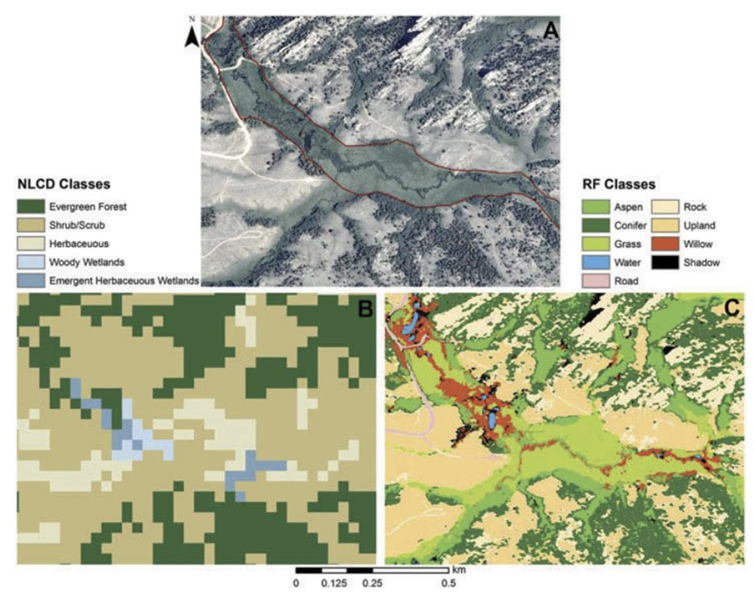

8 week8
8.1 Summary
8.1.1 Lecture
Part 1: Landcover classification (continued)
OBIA: objected based image analysis
Superpixels: consider shapes based on the similarity (homogeneity) or difference (heterogeneity) of the cells
Simple Linear Iterative Clustering (SLIC) Algorithm for Superpixel generation is the most common method
Closeness to center: work out spatial distance (from point to center of pixel)
Homogeneity of colors: color difference (RGB vs RGB to center point)
Compactness: impact of spatial vs color
Transform: not on raw data, but to LAB colour space
Sub pixel analysis
Sub pixel classification=spectral mixture analysis (SMA)=linear spectral unmixing
Part 2: Accuracy
PA producer accuracy=true positive/(true positive + false negative)
UA user's accuracy=true positive/(true positive + false positive)
Overall accuracy=(true positive + true negative)/(true positive +true negative + false positive +false negative)
True positive: model predicts positive class correctly
True negative: model predicts negative class correctly
False positive: model predicts positive, but it is negative
False negative: model predicts negative, but it is positive
8.1.2 Practice
1.vector data
2.EO data
3.Accuracy
4.image

5.(1)k-means
(2) Simple non-iterative clustering (SNIC)
(3) NDVI
Application
1.landcover classification
Qin (2022) introduces four main categories of deep learning models extract information from RS images, including (a) scene classification, which is used to classify image patches and generate scalar values representing one of the scene types; (b) Semantic segmentation, which takes the image patch as input and obtains the ground coverage type of each pixel in the image patch; (c) Object detection that processes image patches to detect object types and generates bounding boxes for each detected object, and (d) object detection that processes image patches to detect object types.
Hayes (2013) use the ensemble Random Forests (RFs) classifier to classify landcover at 1 m resolution using 2009 NAIP imagery in south-eastern Wyoming.

2.accuracy
Example based on the above error matrix:
Number of correctly classified site: 21 + 31+ 22 = 74 Total number of reference sites = 95
Overall Accuracy = 74/95 = 77.9%
Producer’s Accuracy Example based on the above error matrix:
Water: Correctly classified reference sites = 21 Total # of reference sites = 33 Producer's Accuracy = 21/33 = 64%
Forest: Correctly classified reference sites = 31 Total # of reference sites = 39 Producer's Accuracy = 31/39 = 80%
Water: Correctly classified reference sites = 22 Total # of reference sites = 23 Producer's Accuracy = 22/23 =96%
User’s Accuracy Example based on the above error matrix:
Water: Correctly classified sites = 21 Total # of classified sites = 27 User’s Accuracy = 21/27 = 78%
Forest: Incorrectly classified sites = 31 Total # of classified sites = 37 User’s Accuracy = 31/37 = 84%
Water: Incorrectly classified sites = 22 Total # of classified sites = 31 User’s Accuracy = 22/31 = 70%
Reflection
This week I learned about land cover classification and accuracy. In the past, I used to mix accuracy and precision. Now I understand that the two terms do not mean exactly the same thing. Precision refers to the user’s accuracy, that is, how well the user can use the data/classification. Corresponding to this is producer’s accuracy, which refers to the producer’s ability to produce data/classification. Their calculation methods are also completely different.
At the same time, I found that when using GEE, the same purpose may have more than one way. For example, Spectral unfixing can be obtained in two ways. One is to simply define a variable as the end number; The other is to select some training points to take the average.